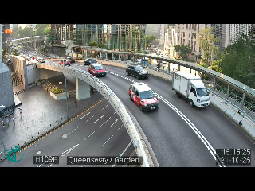

● Zeroization 模擬完成原始影像不外傳 · 僅產生本地 JSON
這是一個純本地、無後端的數字孿生概念示範。車隊沿預設座標移動，事件與置信度來自模擬引擎；照片是素材庫中的參考圖片，不是事件現場或實時鏡頭。
30 ms RAM、FLOPs −45.2%、VIO 誤差 <0.5m 及 100% 私隱流程均屬規格目標，這個版本沒有執行 YOLO、人臉辨識、記憶體安全抹除或合規認證。廢屑箱只模擬外觀分類，不測量內部容量。
頁面不傳送照片或事件。線上底圖會向 OpenStreetMap 請求地圖圖磚；離線模式使用街區示意圖。分流僅改變本地狀態，沒有傳送給政府。重新載入會清除本次資料，可先匯出 JSON。
參考照片保留原有來源性質；本次只供本地教學展示。匯出不包含照片。基準 60.57% 來自學生報告引用，並非本系統準確率。
清除本次模擬事件與覆核紀錄，還原三筆待覆核範例。需要保留資料，可先返回並匯出 JSON。